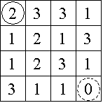

| Source file: | pascal.{c, cpp, java} |
| Input file: | pascal.in |
An n x n game board is populated with
integers, one nonnegative integer per square. The goal is to travel
along any legitimate path from the upper left corner to the lower right
corner of the board. The integer in any one square dictates how large a
step away from that location must be. If the step size would advance
travel off the game board, then a step in that particular direction is
forbidden. All steps must be either to the right or toward the bottom.
Note that a 0 is a dead end which prevents any further progress.
Consider the 4 x 4 board shown in Figure 1, where the solid circle
identifies the start position and the dashed circle identifies the
target. Figure 2 shows the three paths from the start to the target,
with the irrelevant numbers in each removed.
|  | |
| Figure 1 |
Figure 2 |
Input: The input contains data for one to thirty boards, followed by a final line containing only the integer -1. The data for a board starts with a line containing a single positive integer n, 4 ≤ n ≤ 34, which is the number of rows in this board. This is followed by n rows of data. Each row contains n single digits, 0-9, with no spaces between them.
| Example input: | Example output: |
4 |
3 |
Last modified on October 26, 2005 at 6:45 PM.